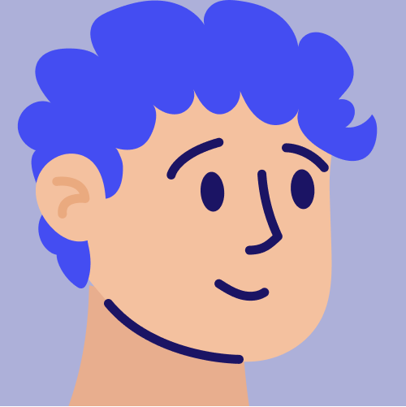

<div class="header-body">
    <div class="header-logo">
        
    </div>

    <div class="header-searchbar">
        <input class="input-searchbar" mat-icon="search" placeholder="Code learning durchsuchen">
        <div class="search-icon-container">
            
        </div>
    </div>

    <div class="header-profile">

        <span> Frederik Deck</span> <!-- durch ts ersetzen -->
         <!-- durch ts ersetzen -->

        <button mat-icon-button [matMenuTriggerFor]="menu">
            <mat-icon>keyboard_arrow_down</mat-icon>
        </button>
        <mat-menu class="dropdown-menu" #menu="matMenu">        <!-- Design ändern ?? -->
            <button mat-menu-item>
                <span>Profile</span> <!-- mat menu einfügen -->
            </button>
            <button mat-menu-item>
                <span>Log-out</span>
            </button>
        </mat-menu>

    </div>
</div>